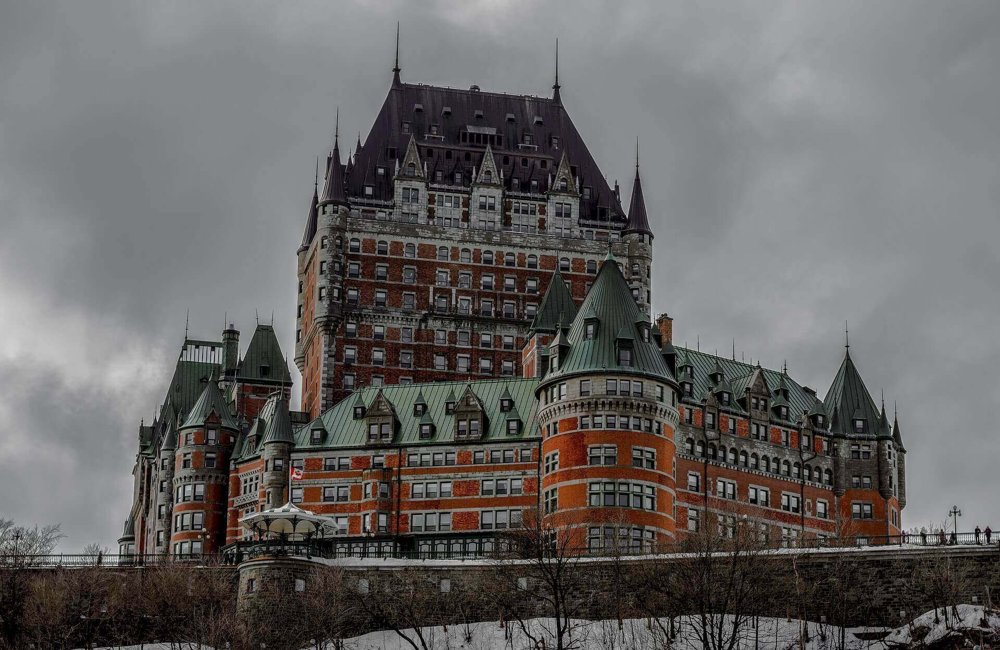

¿ Por que Canada es la mejor opcion para nuevos inmigrantes ?
Canada es el pais con mayor diversidad cultural, es por esto que en los ultimos años ha sido objetivo de interes de muchas personas que desean buscar nuevas oportunidades academicas, laborales y sociales ya que este permite inmigrar junto a su nucleo familiar. Si te interesa saber mas aca puedes encontrar mayor infromacion fundamentada de la pagina oficial Canada.ca

Estudiante Internacional
Puede solicitar una visa como estudiante internacional, la cual le permite trabajar mientras estudia y después de graduarse extender su permiso de trabajo.
Como solicitar un permiso de estudio.
- Estudiar y trabajar en Canada.
- Vivir en canada despues de graduarse y establecerse de forma permanente en el pais.
- Aplicar a diferentes tipos de escuelas como estudiante internacinal en Canada.
- Que es un permiso de estudio y como obtenerlo.
- Becas para estudiantes internacionales.
- Estudiar siendo menor de edad.
Trabajador Internacional
Informese de como puede obtener una permiso como trabajador internacional y cuales son las ventajas de la mobilidad laboral dentro de las cuales existe la opcion de migrar junto a su nucleo familiar.